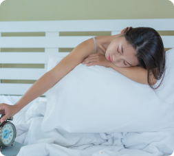
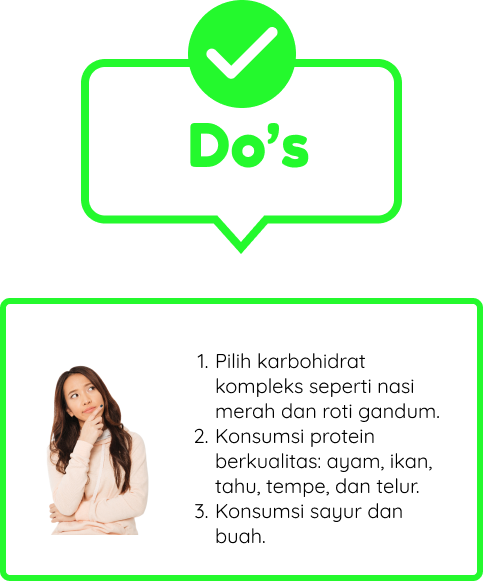
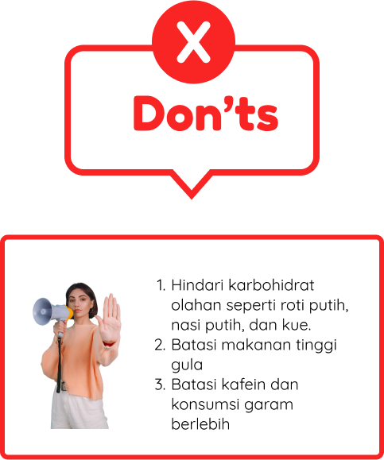

Daily Routine


Aktivitas Siang
Jangan tidur siang terlalu lama, cukup 20-30 menit untuk menghindari gangguan tidur
malam. Untuk tetap produktif dan efisien, hindari prokrastinasi dengan membuat to-do
list yang spesifik dan menggunakan teknik Pomodoro saat bekerja atau belajar.

Langkah-langkah Aktivitas Siang
Makan Siang Sehat
Makan siang yang sehat
juga memiliki peran untuk mendukung kualitas tidur di malam hari loh EssoFriends! Makanan yang dikonsumsi saat siang dapat mempengaruhi energi, suasana hati, dan keseimbangan gula darah. Makan siang yang ideal mengandung karbohidrat kompleks, protein, lemak sehat, sayuran dan buah-buahan.
Hindari makanan tinggi gula dan kafein
karena dapat mempengaruhi pola tidur dengan lonjakan gula darah dan efek stimulan. Dengan memilih makan siang yang seimbang dan menghindari makanan yang mengganggu tidur, kita dapat memastikan tidur berkualitas di malam hari.
juga memiliki peran untuk mendukung kualitas tidur di malam hari loh EssoFriends! Makanan yang dikonsumsi saat siang dapat mempengaruhi energi, suasana hati, dan keseimbangan gula darah. Makan siang yang ideal mengandung karbohidrat kompleks, protein, lemak sehat, sayuran dan buah-buahan.
Hindari makanan tinggi gula dan kafein
karena dapat mempengaruhi pola tidur dengan lonjakan gula darah dan efek stimulan. Dengan memilih makan siang yang seimbang dan menghindari makanan yang mengganggu tidur, kita dapat memastikan tidur berkualitas di malam hari.
"The food you eat can be either the safest and most powerful form of
medicine or the slowest form of poison." – Ann Wigmore

Jangan Tidur Siang Terlalu Lama

Hindari tidur siang terlalu lama atau tidur siang secara rutin
karena hal ini dapat mengganggu pola tidur malammu. Tidur siang jika diperlukan, sebaiknya 20-30 menit saja karena tidur siang yang berlebihan karena sleep inertia atau merasa lesu dan bingung saat terbangun.
karena hal ini dapat mengganggu pola tidur malammu. Tidur siang jika diperlukan, sebaiknya 20-30 menit saja karena tidur siang yang berlebihan karena sleep inertia atau merasa lesu dan bingung saat terbangun.
Hindari Prokrastinasi
Prokrastinasi merupakan perilaku menunda yang dilakukan berulang kali pada
tugas-tugas yang ada. Dalam konteks academic procrastination, hal ini
berdampak
pada munculnya emosi-emosi negatif seperti kecemasan. Prokrastinasi
berkaitan
dengan rendahnya kemampuan regulasi diri. Prokrastinasi memiliki dampak yang
tidak langsung terhadap insomnia.
Contohnya, menunda tidur karena perilaku studyholic, dan penggunaan gadget yang berlebih di malam hari.
Menghindari prokrastinasi memiliki banyak manfaat signifikan
Dengan tidak menunda-nunda, kita dapat meningkatkan produktivitas dan efisiensi dalam menyelesaikan tugas. Hal ini membantu kita mencapai tujuan lebih cepat dan mengurangi stres yang sering muncul karena pekerjaan yang menumpuk.
Menghindari prokrastinasi membawa kita pada kehidupan yang lebih terorganisir, seimbang, dan memuaskan.
- Membuat To Do List yang spesifik dan realistis
- Menggunakan teknik Pomodoro ketika belajar
- Pecah tugas menjadi bagian kecil
- Tetapkan deadline
- Menggunakan sistem reward untuk memotivasi
"A year from now you may wish you had started today." - Karen Lamb

